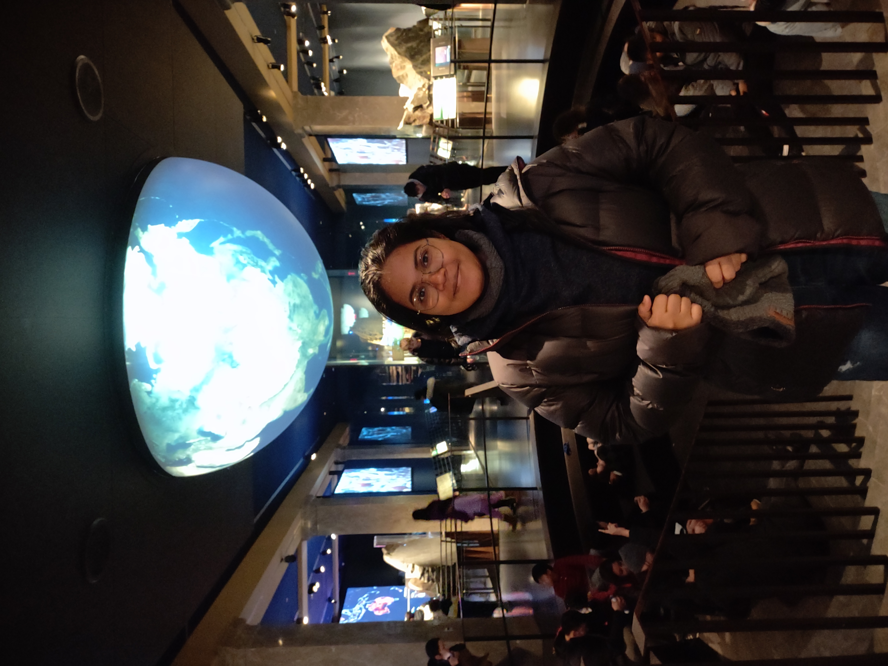

Monika Santra
PhD Candidate, Computer Science & Engineering · Penn State
Software & systems security researcher — binary analysis, program analysis, and AI/ML for security.
Experience
Research Intern — Agentic Security · TBD
Research on the security of agentic AI systems.
PhD Candidate — The SOS Group · State College, PA, USA
Researching program analysis and AI/ML for binary security — indirect call resolution, static disassembly, control-flow recovery, and agentic security.
Research Scientist, Grade C → D · Maharashtra, India
Built trusted systems, industrial control-network security tooling, and ensemble malware classifiers for host protection.
DGFS Fellow — BARC-sponsored M.Tech · Uttarakhand, India
Proposed and implemented a novel remote attestation protocol, published at IEEE TrustCom 2017.
Education
The Pennsylvania State University
2022 – present
PhD in Computer Science & Engineering · GPA 4.0/4.0
State College, PA, USA
Dissertation: AI-Augmented Static Analysis: Bridging Heuristics and Completeness for Practical Reverse Engineering · Advisor: Dr. G. Gary Tan
Indian Institute of Technology Roorkee
2015 – 2017
M.Tech in Computer Science & Engineering · CGPA 9.765/10
Uttarakhand, India
Dissertation: Design and Implementation of Remote Attestation Protocols for Servers · Advisors: Dr. Sateesh K. Peddoju & Dr. Anup K. Bhattacharjee (BARC)
Govt. College of Engineering & Textile Technology, Serampore (WBUT)
2010 – 2014
B.Tech in Computer Science & Engineering · CGPA 8.86/10
West Bengal, India
Honors & Awards
◆
ACM CCS Doctoral Symposium Travel Grant
2025
◆
Dr. Tse-Yun Feng Graduate Student Award — Best RA Award, Penn State CSE
2023
◆
Travel Grant — Indian National Academy of Engineering
2017
◆
DAE Graduate Fellowship Scheme (DGFS-2015) — Sole computer engineering recipient nationally in 2015; Department of Atomic Energy, India
2015 – 2017
◆
Top 0.1% nationally — Graduate Aptitude Test in Engineering (GATE CS)
2015
Projects
iResolveX
Multi-layered indirect call resolution combining static reasoning with learning-augmented refinement for stripped binaries. Published at USENIX Security.
DISA
Learning-guided static disassembly using attention-based transformers to accurately recover code layout on stripped binaries. Published at ACM CCS 2025.
Agent Capability Model (ACaM)
A static- and LLM-augmented pipeline that characterizes capability boundaries and attack surfaces of LLM-based autonomous agents.
Automated Malware Classifier
An ensemble classifier combining static and dynamic analysis for host-based malware detection, deployed at BARC.
Publications
2026
iResolveX: Multi-Layered Indirect Call Resolution via Static Reasoning and Learning-Augmented Refinement
M. Santra, B. Zhang, M. Lim, V. A. Dasu, D. Zeng, G. Tan
USENIX Security
2026
Heimdall: Formally Verified Automated Migration of Legacy eBPF Programs to Rust
V. A. Dasu, M. Santra, M. R. U. Rashid, A. Kumar, S. Tizpaz-Niari, G. Tan
arXiv preprint
2026
BinType: Type-Based Indirect Call Target Refinement on Binary Programs
S. H. Kim, D. Zeng, M. Santra, G. Tan
ACM CODASPY 2026
ACM CODASPY
2026
BPA-X: An Architecture-Agnostic Block-Based Points-to Analysis for Stripped Binaries
B. Zhang, M. Santra, S. Hussain, G. Tan
NDSS 2026
NDSS
2026
Defending AI/ML Models Against Adversarial Attacks with Significant Contextual Features for Better Security
R. K. Koppanati, M. Santra, S. K. Peddoju
Applied Soft Computing
Applied Soft Computing
2025
DISA: Accurate Learning-based Static Disassembly with Attentions
P. Wang, M. Santra, M. Liu, C. Sun, D. Zeng, G. Tan
ACM CCS 2025 (Cycle A)
2025
D²4D: Dynamic Deep 4-Dimensional Analysis for Malware Detection
R. K. Koppanati, M. Santra, S. K. Peddoju
IEEE Transactions on Information Forensics and Security (TIFS), vol. 20, pp. 2083–2095
IEEE TIFS
5 citations
2025
AI-Augmented Static Analysis: Bridging Heuristics and Completeness for Practical Reverse Engineering
M. Santra
ACM CCS Doctoral Symposium 2025
ACM CCS DS
1 citation
2025
PotentRegion4MalDetect: Advanced Features from Potential Malicious Regions for Malware Detection
R. K. Koppanati, M. Santra, S. K. Peddoju
Applied Soft Computing
2017
Design and Analysis of a Modified Remote Attestation Protocol
M. Santra, S. K. Peddoju, A. K. Bhattacharjee, A. Khan
IEEE TrustCom/BigDataSE/ICESS 2017, Sydney, pp. 578–585
IEEE TrustCom
4 citations
Full list on
Google Scholar
· arXiv
· h-index: 3 · 16 total citations